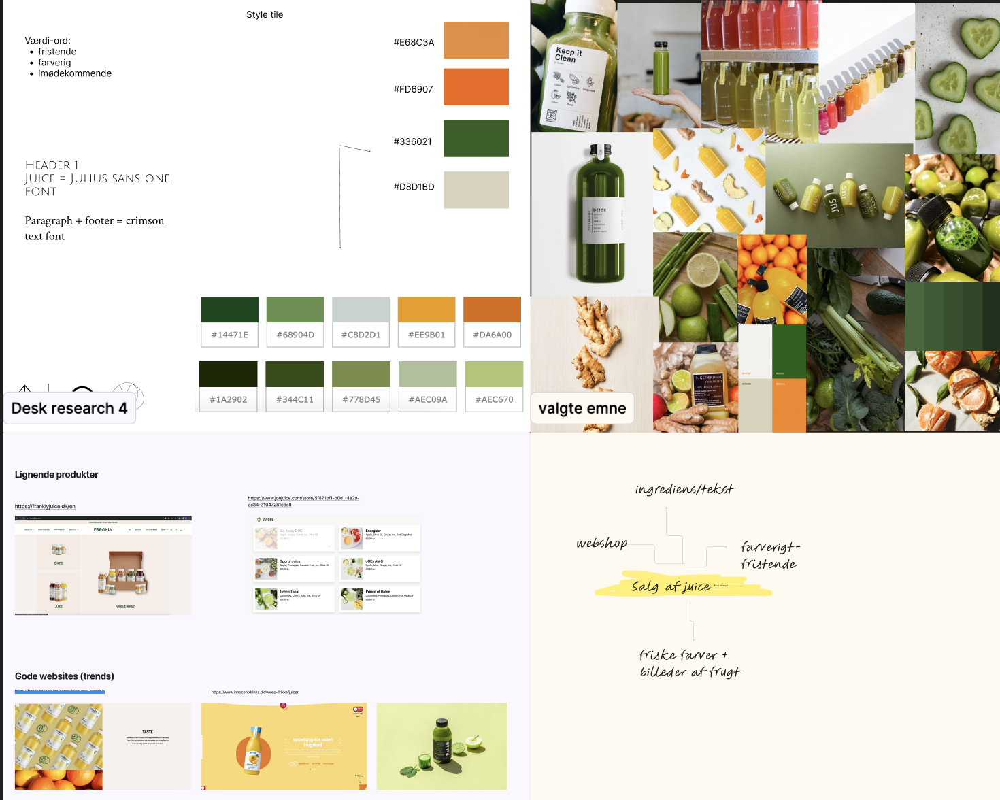
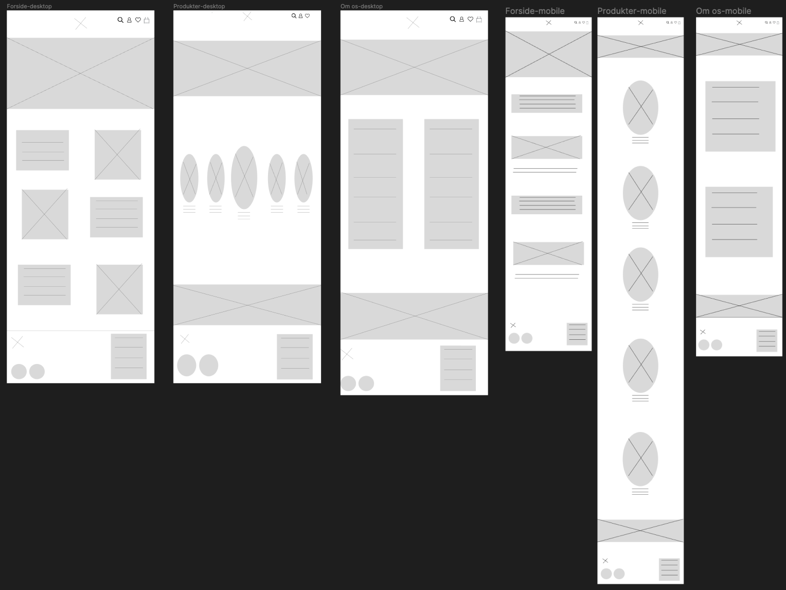
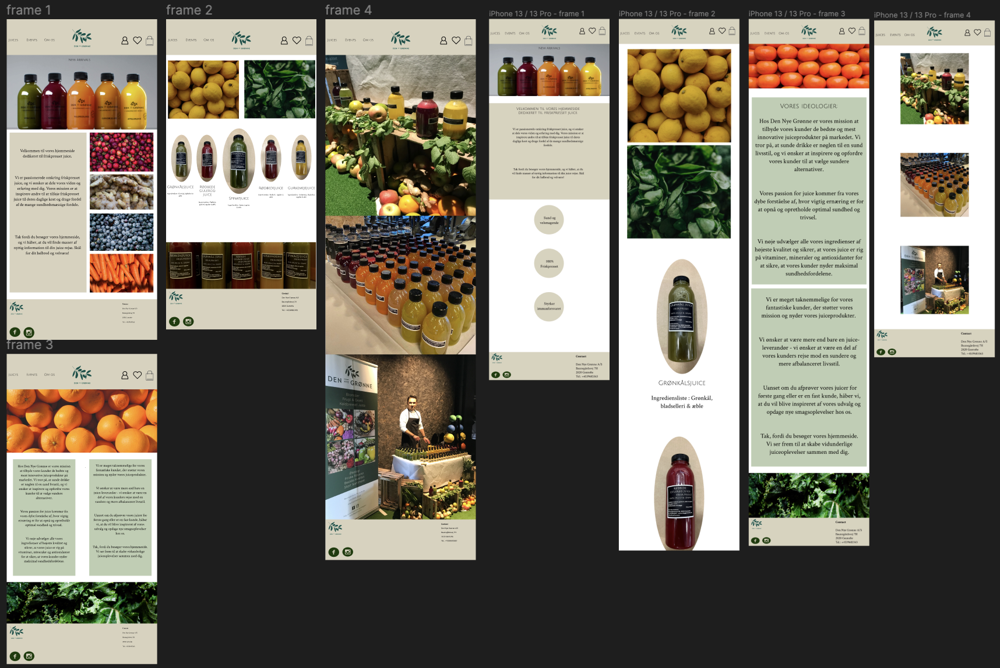
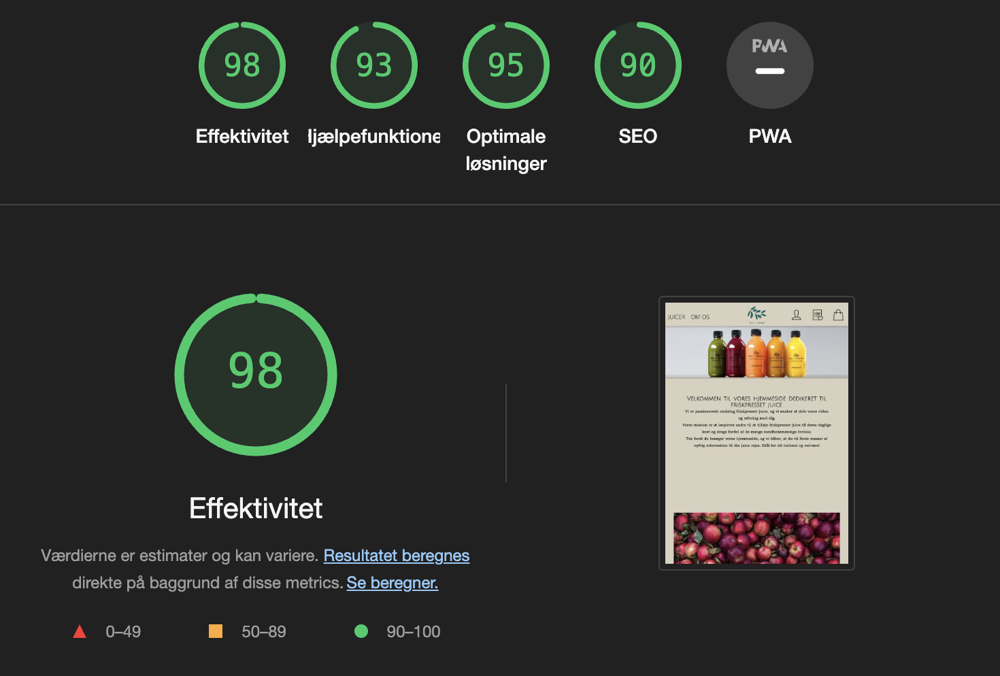
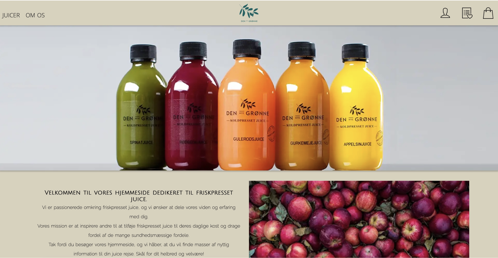

Formålet med temaet "Grundlæggende UX" var at få indsigt i metoderne inden for UX/UI, herunder
konventioner, oprettelse
af wireframes og prototyper samt meget mere.
I dette tema fik vi mulighed for at designe vores egen hjemmeside og selv bestemme, hvad den skulle
handle om. Jeg
valgte at lave en hjemmeside om juice, da jeg har erfaring inden for dette område.
Vi lærte at anvende forskellige designværktøjer, hvor Figma blev vores bedste ven. Vi skulle finde
inspiration for at
kunne udvikle ideer, lave moodboards og style tiles for at opnå det bedste resultat for vores
hjemmeside.
Du kan klikke her for at se min præsentation og få indblik i den proces, jeg har gennemgået i dette
tema.
GRUNDLÆGGENDE
UX
03.04.01 Præsentation
03.04.02 Dokumentation
Til at begynde med, gennemførte jeg en omfattende brainstorming om, hvilket emne jeg
ønskede at vælge, samt hvilken type
hjemmeside jeg ønskede at designe. Da jeg besluttede mig for at lave en hjemmeside om juice, hvor man
kunne sælge juice,
gik jeg straks i gang med at skabe et moodboard og udvikle idéer. Jeg nåede frem til et moodboard, som
kan ses i det
vedhæftede billede til højre. Efter at have færdiggjort mit moodboard, søgte jeg inspiration fra
eksisterende
juice-hjemmesider for at få yderligere ideer. Jeg afsluttede min research ved at skabe en styletile, som
også kan ses på
det vedhæftede billede. Jeg havde en klar vision om at arbejde med friske og indbydende farver.

Efter at have valgt emnet og færdiggjort min research, påbegyndte jeg udarbejdelsen af mine
wireframes. Jeg begyndte med
at skabe wireframes i desktop-størrelse, og derefter omformede dem til mobilstørrelse for at gøre det
lettere for mig at
kode. Her fik jeg tænkt over hvor mange grids jeg skulle lave, hvordan min menu og
footer skulle opstilles, og alt det basale.

Efter at have færdiggjort mine wireframes, gik jeg i gang med prototypen, hvor jeg gjorde
mig nogle overvejelser om valg af
billeder, farver og ikoner. På billedet til højre kan man se resultatet af mine prototyper både i
desktop og mobil
størrelse. Nu gik jeg videre til kodningsdelen ved hjælp af HTML og CSS. Dog opstod der nogle ændringer
undervejs, da
jeg havde svært ved at implementere nogle af de elementer, jeg havde designet i min prototype. Disse
ændringer er ikke
nødvendigvis negative, da jeg stadig opnåede et positivt og tilfredsstillende resultat.

Til sidst, da jeg havde færdiggjort designet og koden til min hjemmeside, følte jeg behov
for at teste den og se, om der var behov
for ændringer eller forbedringer. Derfor begyndte jeg en lighthouse-test og blev ganske overrasket over
resultaterne,
jeg opnåede.


Dette tema har givet mig erfaraing med UX/UI metoder, og har lært mig at arbejde med design og udvikling af produkt, samt formidle mine research og testresultater. Jeg har fået en grundlæggende forståelse for Figma, HTML og CSS.
Klik på knappen herunder, hvis du vil se mere omkring min hjemmeside.
SE DOKUMENTATION SE PRÆSENTATION